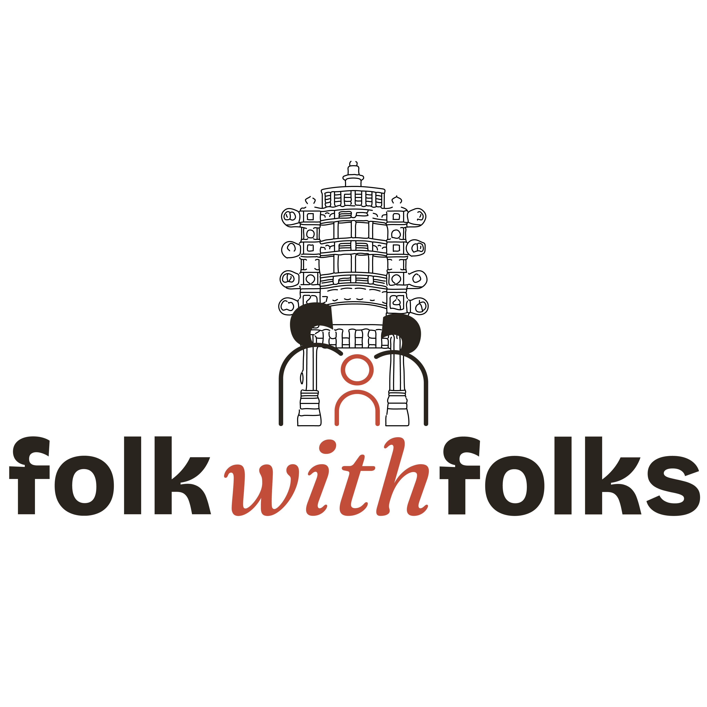
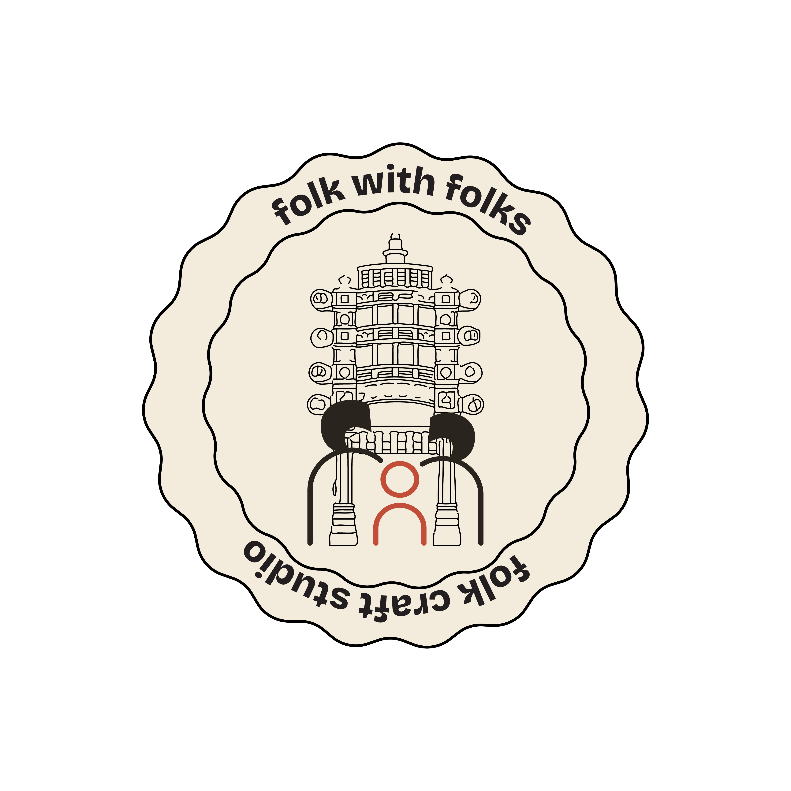
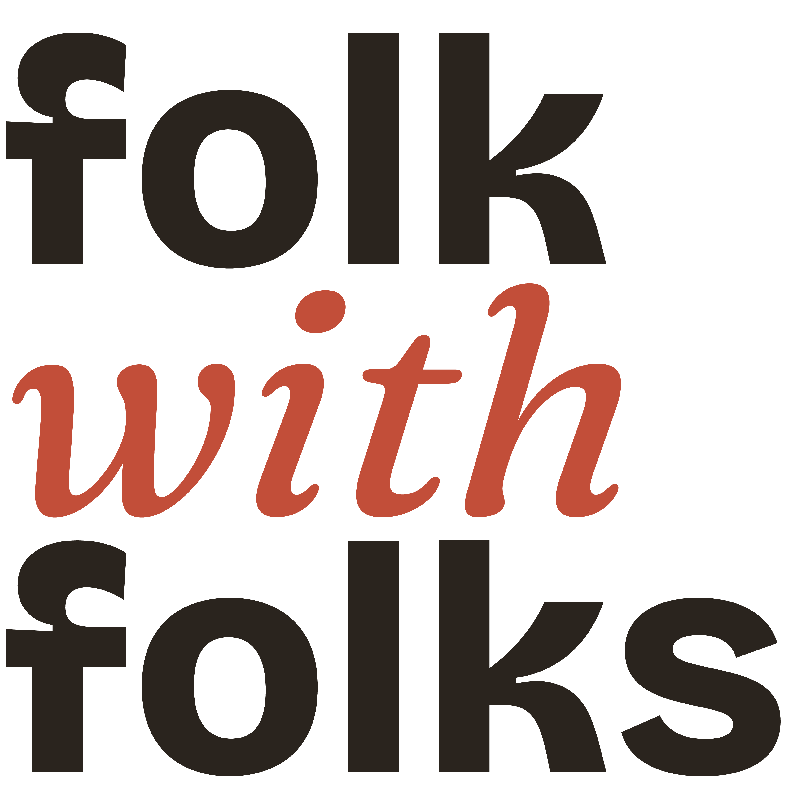
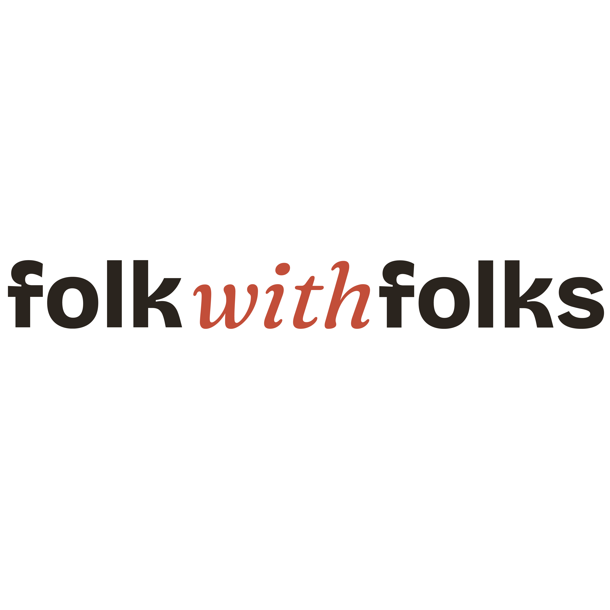
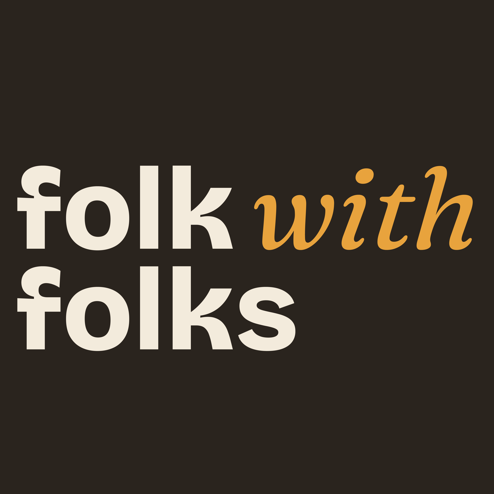
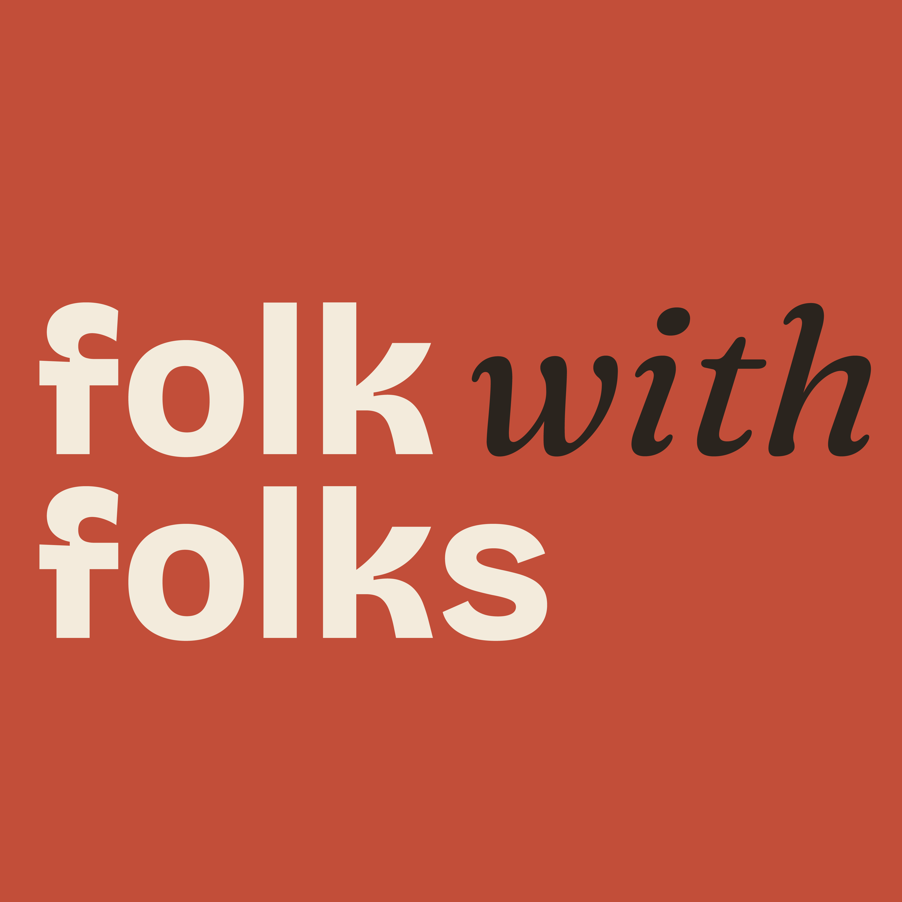

The full Folk with Folks mark family. Each version is built for a different job — pick by the space you’re filling and the colour behind it. The primary lockup is the default; reach for the others only when it won’t fit or won’t read.






Keep a margin of at least the symbol’s circle (or the cap-height of “folk”) clear on every side. Don’t crowd it with other elements.
Full lockups: don’t go below ~120px wide on screen. Below that, switch to the wordmark or seal so the torana detail doesn’t mud up.
Don’t recolour the type, stretch, add shadows, or place the transparent marks on a busy mid-tone. Light art → light grounds, reversed art → dark/colour.